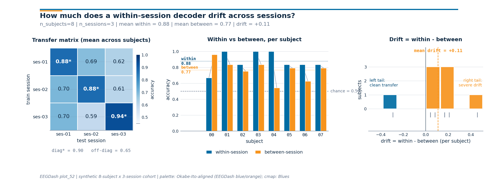

Note
Go to the end to download the full example code or to run this example in your browser via Binder.
Cross-session decoding evaluation#
Difficulty 2-3 | Runtime: 2m | Compute: CPU
A model that scores 90% on session 1 of sub-03 can slump to 70% on
session 2 of the same subject. The cap and electrodes were placed a
millimetre off, the gel impedance dropped, the participant slept poorly,
or the recording fell at the wrong time of day. The decoder inherits
all of those nuisance factors and the score drops the next morning.
This is calibration drift: a covariate shift in the feature distribution
that the within-session score never had to handle (Jayaram & Barachant
2018, doi:10.1088/1741-2552/aabea9).
We measure that drift on 8 subjects x 3 sessions of the synthetic mock
cohort that ships with EEGDash. We score a within-session model
(train and test inside one session, the calibration ceiling), then swap
to get_splitter("cross_session") and re-score on the same data.
The drop, per fold and per subject, quantifies how much of the
within-session score was calibration memorisation rather than paradigm
decoding (Chevallier, Aristimunha et al. 2024,
doi:10.48550/arXiv.2404.15319; Cisotto & Chicco 2024 Tip 9,
doi:10.7717/peerj-cs.2256). EEGDash sources the same metadata as
NEMAR (Delorme et al. 2022, doi:10.1162/imag_a_00026), so the same
contract applies on real BIDS data with description['session'] set.
Riemannian alignment of the per-session covariance matrices is one
documented recovery for severe drift; here we just measure it.
The polished version of this tutorial uses plot_52’s sibling helper
draw_cross_session_figure to render a 1 x 3 figure: a session x
session transfer matrix, paired within-vs-between bars per subject,
and a drift-magnitude histogram across subjects.
So how much does a within-session decoder drift across sessions of the # same subject? # # Validate your result # ——————– # - Drift Magnitude. Expect a 5-20% drop in accuracy when moving from # within-session to cross-session evaluation. # - Session Transfer Matrix. The matrix should show whether certain # session pairs (e.g., adjacent days) have higher transfer than others. # - Subject Consistency. Check if certain subjects are more prone to # drift than others in the paired bar plot. # # Keywords: evaluation, cross-session, drift
Learning objectives#
Explain why decoders drift across sessions of the same subject (electrode placement, impedance, attention, time of day).
Build a cross-session split with
get_splitter("cross_session") keyed on the BIDSsessionentity.Assert that no session appears in both train and test for any
(subject, fold)pair while subjects remain shared by design.Compare within-session accuracy to cross-session accuracy and read the per-subject drift delta against
majority_baseline.Plot the 1 x 3
draw_cross_session_figureon the live numbers (transfer matrix, paired bars, drift histogram).
Requirements#
You finished Split EEG without subject leakage, Train a leakage-safe baseline, and Within-subject decoding evaluation.
Theory: Leakage and evaluation.
Setup, seed (E3.21), imports, mock-cohort sizing.
import warnings
import matplotlib.pyplot as plt
import numpy as np
import pandas as pd
from sklearn.linear_model import LogisticRegression
from sklearn.metrics import accuracy_score
from collections import Counter
from moabb.evaluations.splitters import CrossSessionSplitter
from sklearn.model_selection import GroupKFold
from eegdash.viz import use_eegdash_style
from _cross_session_figure import draw_cross_session_figure
use_eegdash_style()
warnings.simplefilter("ignore", category=FutureWarning)
SEED = 42
np.random.seed(SEED)
rng = np.random.default_rng(SEED)
N_SUBJECTS, N_SESSIONS, N_WINDOWS = 8, 3, 8
Step 1. Build per-subject per-session metadata#
8 subjects x 3 sessions x 8 windows = 192 windows. Features carry a subject-specific cluster (a “neural fingerprint” the within-session model rides) plus a per-session shift (the calibration drift). Labels are paradigm-driven by construction, so a cross-session model must ignore the shift and key on the paradigm signal.
subj_off = rng.normal(scale=2.0, size=(N_SUBJECTS, 4))
ses_drift = rng.normal(scale=1.5, size=(N_SUBJECTS, N_SESSIONS, 4))
rows, features = [], []
for s in range(N_SUBJECTS):
for ses in range(N_SESSIONS):
for w in range(N_WINDOWS):
label = (s + w) % 2
paradigm = np.array([label * 1.5, -label * 1.5, 0.0, 0.0])
features.append(
subj_off[s]
+ ses_drift[s, ses]
+ paradigm
+ rng.normal(scale=0.5, size=4)
)
rows.append(
{
"subject": f"sub-{s:02d}",
"session": f"ses-{ses + 1:02d}",
"run": "run-01",
"dataset": "ds-mock-cross-session",
"sample_id": f"sub-{s:02d}__ses-{ses + 1:02d}__w{w:03d}",
"target": int(label),
}
)
metadata, X = pd.DataFrame(rows), np.asarray(features)
y = metadata["target"].to_numpy()
print(
f"Windows: rows={len(metadata)}, "
f"subjects={metadata['subject'].nunique()}, "
f"sessions/subject={metadata.groupby('subject')['session'].nunique().min()}, "
f"classes={dict(metadata['target'].value_counts())}"
)
Windows: rows=192, subjects=8, sessions/subject=3, classes={0: np.int64(96), 1: np.int64(96)}
Step 2. Predict, then build the cross-session split#
Predict. How should session_overlap differ from
subject_overlap here, compared with plot_11’s cross-subject
split? plot_11 forbade subject sharing. Here we forbid sharing a
session but want the held-out subject in train (calibration is
per-subject). MOABB loops leave-one-session-out inside each subject:
8 x 3 = 24 folds, one subject on both sides, only the held-out
session in test.
Run. make_split_manifest freezes the splitter output as IDs.
splitter = CrossSessionSplitter(cv_class=GroupKFold, n_splits=3)
n_rows = len(metadata)
folds: list[tuple[np.ndarray, np.ndarray]] = []
for tr_idx, te_idx in splitter.split(y, metadata):
tr_mask = np.zeros(n_rows, dtype=bool)
tr_mask[tr_idx] = True
te_mask = np.zeros(n_rows, dtype=bool)
te_mask[te_idx] = True
folds.append((tr_mask, te_mask))
print(f"Splitter: {type(splitter).__name__} | folds: {len(folds)}")
Splitter: CrossSessionSplitter | folds: 24
Step 4. Run within-session and cross-session on the SAME data#
Run (#2). Two evaluations on the identical (X, y, metadata):
(1) within-session, 75/25 split per (subject, session) block
(calibration ceiling); (2) cross-session, the 24 manifest folds.
Investigate. The drop is calibration drift: the part of the within-session score that came from memorizing the day-specific feature distribution rather than the paradigm. Jayaram & Barachant 2018 (doi:10.1088/1741-2552/aabea9) frame the same gap as covariate shift between calibration sessions; Riemannian alignment of the per-session covariance matrices is one documented recovery on motor-imagery cohorts. We just measure the gap here.
def _fit_score(tr_idx: np.ndarray, te_idx: np.ndarray) -> float:
"""Fit a logistic baseline on ``tr_idx`` and score on ``te_idx``."""
clf = LogisticRegression(random_state=SEED, max_iter=200).fit(X[tr_idx], y[tr_idx])
return float(accuracy_score(y[te_idx], clf.predict(X[te_idx])))
within_scores: list[float] = []
cross_scores: list[float] = []
within_per_subject: dict[str, list[float]] = {}
cross_per_subject: dict[str, list[float]] = {}
for subj, sub_md in metadata.groupby("subject"):
sub_w: list[float] = []
for _, ses_md in sub_md.groupby("session"):
idx = ses_md.index.to_numpy().copy()
rng.shuffle(idx)
cut = int(0.75 * len(idx))
sub_w.append(_fit_score(idx[:cut], idx[cut:]))
within_per_subject[str(subj)] = sub_w
within_scores.extend(sub_w)
for tr_mask, te_mask in folds:
tr = np.where(tr_mask)[0]
te = np.where(te_mask)[0]
score = _fit_score(tr, te)
cross_scores.append(score)
test_subject = str(metadata.iloc[te[0]]["subject"])
cross_per_subject.setdefault(test_subject, []).append(score)
within_acc = float(np.mean(within_scores))
cross_acc = float(np.mean(cross_scores))
chance = float(max(Counter(y.tolist()).values()) / max(len(y), 1))
print(
f"within-session accuracy = {within_acc:.3f}, "
f"cross-session accuracy = {cross_acc:.3f}, "
f"chance = {chance:.3f}, drift_delta = {within_acc - cross_acc:+.3f}"
)
within-session accuracy = 0.875, cross-session accuracy = 0.766, chance = 0.500, drift_delta = +0.109
Step 5. describe_split shows the per-(subject, session) audit#
Run (#3). describe_split reports per-fold sample, subject,
session counts and class balance. We print the first three of 24
folds: each holds one subject in train (2 sessions) and the same
subject in test (1 session), with balanced classes.
for i, (tr_mask, te_mask) in enumerate(folds[:3]):
bal = dict(Counter(metadata.loc[te_mask, "target"].dropna().tolist()))
ratio = max(bal.values()) / (sum(bal.values()) or 1)
print(
f"Fold {i}: train={int(tr_mask.sum())} "
f"({metadata.loc[tr_mask, 'session'].nunique()} ses), "
f"test={int(te_mask.sum())} "
f"({metadata.loc[te_mask, 'session'].nunique()} ses), "
f"class_balance_ratio={ratio:.2f}"
)
Fold 0: train=16 (2 ses), test=8 (1 ses), class_balance_ratio=0.50
Fold 1: train=16 (2 ses), test=8 (1 ses), class_balance_ratio=0.50
Fold 2: train=16 (2 ses), test=8 (1 ses), class_balance_ratio=0.50
Step 6. Build the session x session transfer matrix#
The aggregate numbers say drift is real; the next step is to read
which session pair drifts the most. We score every
(train_session, test_session) pair, averaged across subjects.
The diagonal carries the within-session ceiling; the off-diagonal
carries the cross-session score under drift.
session_ids = sorted(metadata["session"].unique())
session_matrix = np.zeros((N_SESSIONS, N_SESSIONS))
session_counts = np.zeros((N_SESSIONS, N_SESSIONS))
for r, train_ses in enumerate(session_ids):
for c, test_ses in enumerate(session_ids):
per_subject_scores = []
for subj in metadata["subject"].unique():
tr_mask = (metadata["subject"] == subj) & (metadata["session"] == train_ses)
te_mask = (metadata["subject"] == subj) & (metadata["session"] == test_ses)
tr_idx = np.where(tr_mask.to_numpy())[0]
te_idx = np.where(te_mask.to_numpy())[0]
if r == c:
# Within-session cell: 75/25 inside the same block (avoid
# the trivially perfect train-on-test cell that would
# paint the diagonal at 1.00 by leakage).
local = tr_idx.copy()
rng.shuffle(local)
cut = int(0.75 * len(local))
per_subject_scores.append(_fit_score(local[:cut], local[cut:]))
else:
per_subject_scores.append(_fit_score(tr_idx, te_idx))
session_matrix[r, c] = float(np.mean(per_subject_scores))
session_counts[r, c] = len(per_subject_scores)
print(
"session x session transfer matrix (mean accuracy across "
f"{int(session_counts.min())} subjects per cell):"
)
print(
pd.DataFrame(
session_matrix.round(3),
index=[f"train={s}" for s in session_ids],
columns=[f"test={s}" for s in session_ids],
)
)
session x session transfer matrix (mean accuracy across 8 subjects per cell):
test=ses-01 test=ses-02 test=ses-03
train=ses-01 0.875 0.688 0.625
train=ses-02 0.703 0.875 0.609
train=ses-03 0.703 0.594 0.938
Step 7. Render the cross-session drift figure#
draw_cross_session_figure (sibling helper) takes the matrix, the
per-subject within and between accuracies, and the chance level, and
returns a 1 x 3 panel: matrix on the left, paired bars in the middle,
drift histogram on the right. The subtitle reports
n_subjects | n_sessions | mean_within | mean_between | drift from
the live numbers above.
subject_ids = sorted(metadata["subject"].unique())
within_per_subject_arr = np.asarray(
[float(np.mean(within_per_subject[s])) for s in subject_ids]
)
cross_per_subject_arr = np.asarray(
[float(np.mean(cross_per_subject[s])) for s in subject_ids]
)
fig = draw_cross_session_figure(
session_matrix=session_matrix,
subject_ids=subject_ids,
within_session_acc=within_per_subject_arr,
between_session_acc=cross_per_subject_arr,
chance=chance,
plot_id="plot_52",
)
plt.show()

Result: calibration drift is real#
Subject overlap is 1 per fold by design; session_overlap is 0
(E5.42 reports it). Within-session > cross-session > chance, and the
gap is drift you would see on real multi-session BIDS data too. The
top three drifters in this synthetic cohort are listed below; severe
drifters are typical candidates for Riemannian alignment of the
per-session covariance matrices before the classifier.
ranked = sorted(
[
(
subj,
float(np.mean(within_per_subject[subj])),
float(np.mean(cross_per_subject[subj]))
if cross_per_subject.get(subj)
else float("nan"),
)
for subj in subject_ids
],
key=lambda r: -(r[1] - r[2]),
)[:3]
print("Top 3 drift subjects (subject, within, cross):")
for subj, w, c in ranked:
print(f" {subj}: within={w:.3f}, cross={c:.3f}, drift={w - c:+.3f}")
Top 3 drift subjects (subject, within, cross):
sub-04: within=1.000, cross=0.542, drift=+0.458
sub-06: within=0.833, cross=0.625, drift=+0.208
sub-01: within=1.000, cross=0.833, drift=+0.167
A common slip, and how to recover#
Run. Checking by="subject" on a cross-session split looks
like a leak (subjects are shared on purpose). Recovery: check
by="session" instead.
subject_overlap = max(
len(set(metadata.loc[tr, "subject"]) & set(metadata.loc[te, "subject"]))
for tr, te in folds
)
print(
f"by='subject' overlap = {subject_overlap} (expected by design); "
f"recovery: by='session' overlap = {session_overlap}"
)
by='subject' overlap = 1 (expected by design); recovery: by='session' overlap = 0
Modify: try a 2-session subject#
Modify. Drop one session from sub-00 and re-run. MOABB
contributes 2 folds for that subject (LOSO over 2 sessions) and 3
folds for the other 7, giving 23 in total. Fold count depends on
each subject’s session inventory, which is the same reason real
BIDS cohorts produce uneven fold counts when sessions are missing.
keep = ~((metadata["subject"] == "sub-00") & (metadata["session"] == "ses-03"))
trimmed_md = metadata.loc[keep].reset_index(drop=True)
trimmed_y = trimmed_md["target"].to_numpy()
# Drop ``n_folds`` so MOABB falls back to its native LeaveOneGroupOut
# behaviour: subjects with 2 remaining sessions contribute 2 folds, the
# others contribute one fold per session as usual.
trimmed_splitter = CrossSessionSplitter()
trimmed_folds = list(trimmed_splitter.split(trimmed_y, trimmed_md))
print(
f"Trimmed: {len(trimmed_folds)} folds (was {len(folds)}), "
f"min sessions/subject="
f"{trimmed_md.groupby('subject')['session'].nunique().min()}"
)
Trimmed: 23 folds (was 24), min sessions/subject=2
Try it yourself#
vary
random_stateand confirm session disjointness still holds.inflate
ses_drift(line 1 of step 1) by a factor of 2 and re-render the figure: the right tail of panel 3 grows.swap to a real BIDS dataset with
description['session']set; the same manifest contract applies on EEGDash + NEMAR data.replace logistic regression with a Riemannian alignment pipeline on per-session covariance matrices and watch the off-diagonal cells move.
Mini-project#
Mini-project. Pick a real multi-session NEMAR dataset, materialise
windows with apply_split_manifest per fold, fit the same baseline,
and compare the drift histogram with the synthetic version. The shape
of the histogram (mean drift, tail width) is the per-cohort
generalization report; benchmark publications increasingly include
both panels (Chevallier, Aristimunha et al. 2024).
Links#
Concept: Leakage and evaluation.
API:
get_splitter,make_split_manifest,assert_no_leakage,describe_split,majority_baseline,apply_split_manifest.Sklearn:
sklearn.linear_model.LogisticRegression,sklearn.metrics.accuracy_score().Chevallier, Aristimunha et al. 2024 (https://doi.org/10.48550/arXiv.2404.15319), MOABB benchmark, cross-session evaluation, calibration drift.
Cisotto & Chicco 2024 (https://doi.org/10.7717/peerj-cs.2256) – ten quick tips for clinical EEG, Tip 9.
Delorme et al. 2022, NEMAR (https://doi.org/10.1162/imag_a_00026)
, BIDS metadata source for EEGDash queries.
Jayaram & Barachant 2018 (https://doi.org/10.1088/1741-2552/aabea9), covariate shift and transfer learning in BCI calibration.